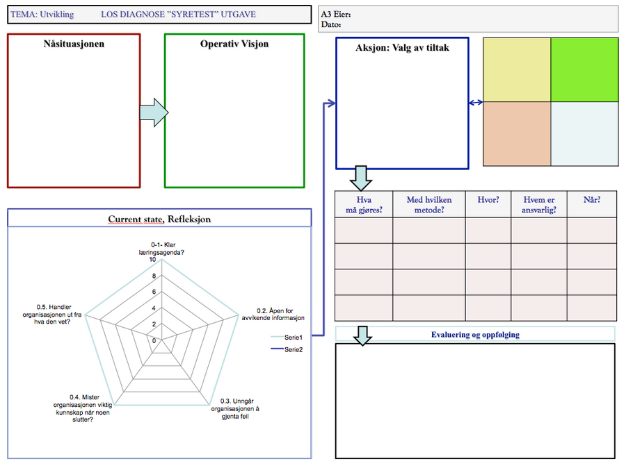
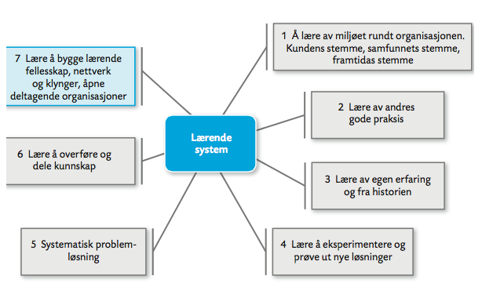

Kapittel 7: Hva er en lærende organisasjon?
Lærende organisasjoner – ressurser
En lærende organisasjon er en organisasjon som er dyktig til å skaffe seg, skape, tolke, overføre, dele og beholde kunnskap, og målbevisst tilpasse sin atferd for å gjenspeile ny kunnskap og innsikt.
7.1. Hva er kunnskap?
Kunnskap er en samling av delte (felles) og individuelle mentale modeller vi har om verden rundt oss. Det er det vi bruker for å navigere i livet vårt og ta beslutninger og veivalg.
Læring er prosessen for å utvikle og forbedre våre mentale modeller for å bli bedre til å navigere i den virkelige verden.
Vitenskap er systematiske prosesser for å utvikle kunnskap som bedre samsvarer med den virkelige verden.
Komplekse tilpasningssystemer (CAS) er systemer som evner å tilpasse seg endringer for bedre å samspille med den virkelige verden.
7.2. Hva er en organisasjon?
En organisasjon oppstår når menneske ikke kan klare oppgaven aleine.
Det finnes ulike "bindemiddel" eller det som får organisasjonen til å fungere. Her finnes det formelle systemer i form av statutter, regler og standarder. Men ofte er det relasjonene mellom mennesker og funksjoner som er bindemiddelet.
Refleksjon: Hvordan ser din arbeidsenhet ut som formell organisasjon?
Men hvordan er den reelle. Hvem er du avhengig av for å få gjort jobben best mulig?
7.3. Hva er en lærende organisasjon
I tillegg til Peter Senge, er David Garvin og Amy Edmonson viktige bidragsytere i teoriutvikling om lærende organisasjon. Her er en video med intrevju av de to:
7.4 Finnes det en syretest?
Her ligger en link til en A3 som har fem spørsmålsstillinger
7.5. Hva er et lærende system?
Syv kjennetegn på det lærende systemet.


Det finnes et mangfold av organisasjonsformer og vi må lære oss å
forstå hvordan organisasjoner oppstår og hvordan de utvikler seg. Vi har tidligere sett på organisasjon 1.0 - 2.0 og 3.0 typer. I dag snakkes det om "agile" organisasjoner, organisasjoner som selvorganiserer seg uten en tydelig formell struktur.
Se videoen av Bonnitta Roy om hvordan slike organisasjoner oppstår.
David Garvin fra Harvard.forklarer i dette foredraget om kjennetegn på lærende orgaisasjoner.
Her er en annen video der Peter tar for seg kjennetegnet ved fremragende ledere knyttet til organisatorisk læring.
Slik bruker dere A3-en
1. Diskuter og sett karakter fra 0-10 på hvert av de 5 "syretest kriteriene"
2. Fyll inn radardiagrammet på A3-en.
3. Sett kort tekst om det viktigste ved nå-tilstand i rød rute. Og hvordan dere vil at det skal se ut i framtida i grønn rute.
4. Analyser (DSRP - systemtenkning) og bestem de viktigste tiltakene for å nå ønsket tilstand.
5. Sett i gang, snurr hjul!
Nedlastinger
Videoer
Let's start the conversation
Want to learn more about our offerings, or have specific challenges to address? Reach out.